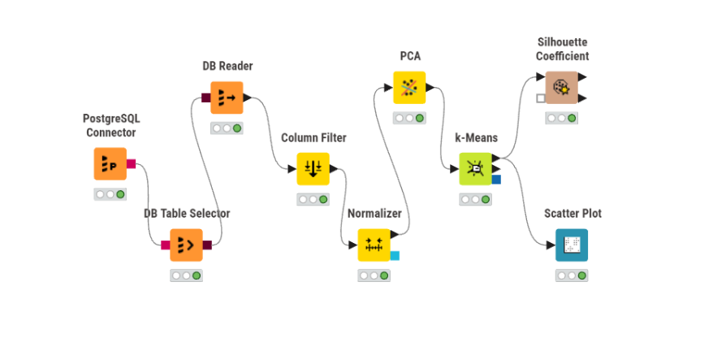
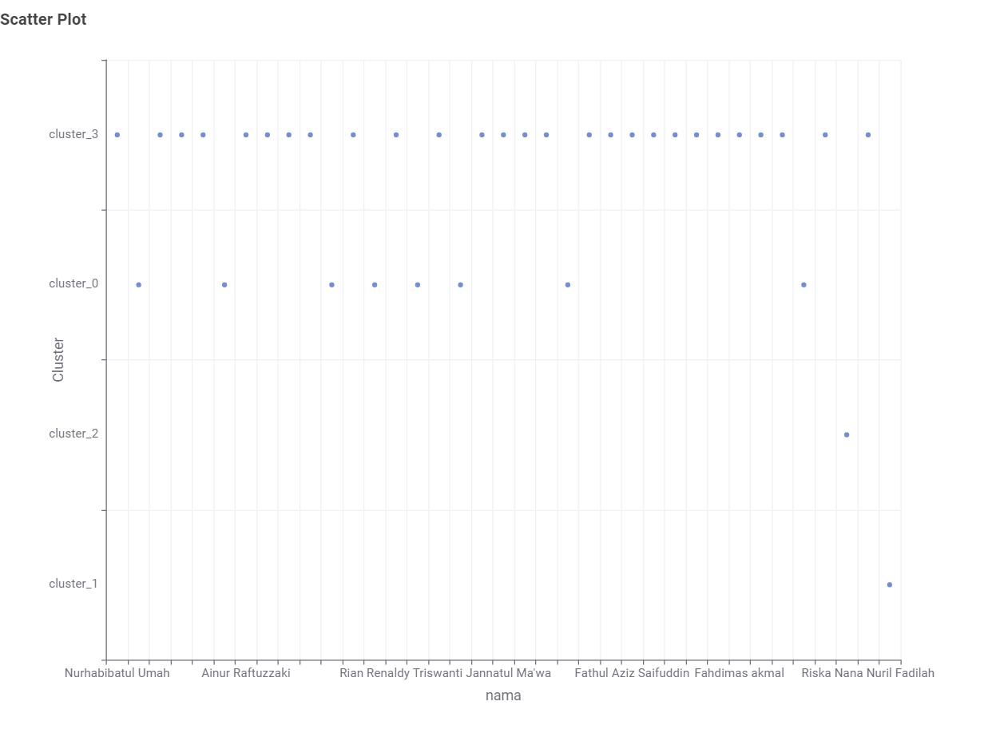
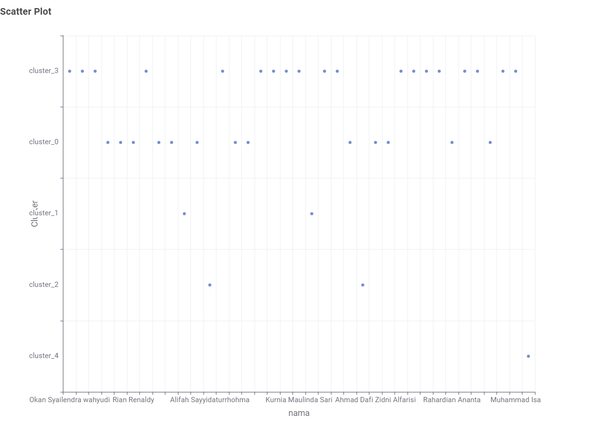
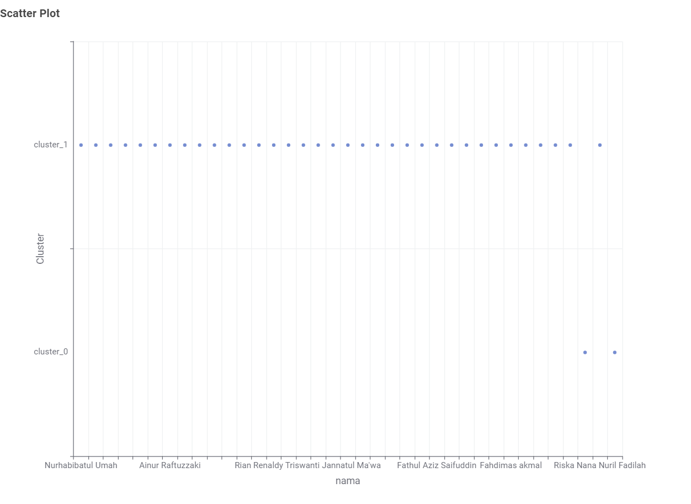
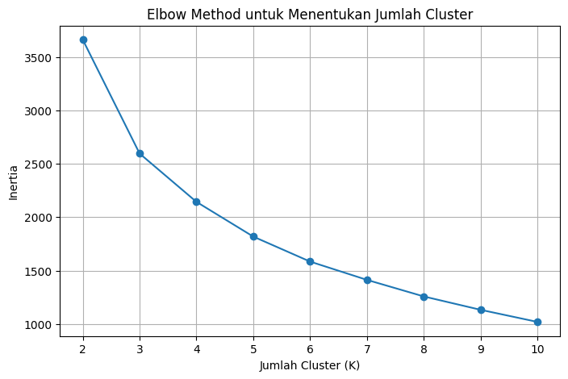
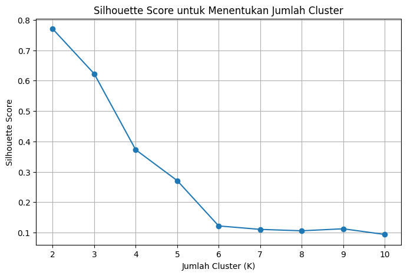

7. Reduksi Dimensi dan K-Means Clustering#
Tahap ini dilakukan untuk menganalisis hasil ekstraksi fitur dari tiga polutan, yaitu Karbon Monoksida (CO), Nitrogen Dioksida (NO₂), dan Sulfur Dioksida (SO₂). Analisis clustering dilakukan terhadap 68 fitur hasil ekstraksi masing-masing polutan menggunakan KNIME.
Sebelum proses clustering, data fitur dinormalisasi menggunakan Z-score, kemudian dilakukan reduksi dimensi menggunakan Principal Component Analysis (PCA) dari 68 fitur menjadi 37 komponen utama. Hasil reduksi dimensi tersebut selanjutnya digunakan sebagai masukan pada algoritma K-Means Clustering.
Kualitas hasil clustering dievaluasi menggunakan Silhouette Coefficient untuk mengetahui seberapa baik objek berada pada cluster-nya dibandingkan dengan cluster lainnya. Hasil clustering kemudian divisualisasikan menggunakan Scatter Plot berdasarkan nama dan cluster yang diperoleh.
7.1. 1. Reduksi Dimensi dengan Principal Component Analysis (PCA)#
Principal Component Analysis (PCA) merupakan metode reduksi dimensi yang digunakan untuk mengubah sejumlah variabel yang saling berkorelasi menjadi sekumpulan variabel baru yang disebut principal components atau komponen utama. Setiap komponen utama merupakan kombinasi linear dari fitur-fitur awal dan disusun berdasarkan besarnya variasi data yang dapat dijelaskan.
Secara umum, PCA membentuk komponen utama sebagai:
dengan:
\(PC_j\) = komponen utama ke-\(j\),
\(X_1, X_2, \ldots, X_p\) = fitur awal,
\(w_{j1}, w_{j2}, \ldots, w_{jp}\) = bobot atau loading setiap fitur.
Pada penelitian ini, setiap polutan memiliki 68 fitur hasil ekstraksi TSFEL. Sebelum PCA diterapkan, seluruh fitur dinormalisasi menggunakan Z-score agar perbedaan skala antarfitur tidak mendominasi proses pembentukan komponen utama.
Normalisasi Z-score dirumuskan sebagai:
dengan \(x\) sebagai nilai data, \(\mu\) sebagai rata-rata, dan \(\sigma\) sebagai standar deviasi.
Sesuai tahapan analisis yang dilakukan, 68 fitur pada masing-masing polutan direduksi menjadi 37 komponen PCA. Dengan demikian, data yang digunakan sebagai masukan K-Means memiliki 37 dimensi untuk setiap mahasiswa/objek pengamatan.
7.2. 2. K-Means Clustering dan Silhouette Coefficient#
7.2.1. 2.1 K-Means Clustering#
K-Means merupakan metode unsupervised learning yang digunakan untuk mengelompokkan data ke dalam sejumlah \(K\) cluster berdasarkan kemiripan karakteristiknya. Setiap cluster memiliki titik pusat yang disebut centroid.
Secara umum, K-Means berusaha meminimalkan jarak antara setiap data dengan centroid cluster tempat data tersebut berada. Fungsi objektif K-Means dapat dituliskan sebagai:
dengan:
\(K\) = jumlah cluster,
\(C_k\) = cluster ke-\(k\),
\(x_i\) = data ke-\(i\),
\(\mu_k\) = centroid cluster ke-\(k\).
Pada penelitian ini, masukan K-Means adalah 37 komponen hasil PCA dari masing-masing polutan CO, NO₂, dan SO₂.
7.2.2. 2.2 Silhouette Coefficient#
Silhouette Coefficient digunakan untuk mengevaluasi kualitas hasil clustering dengan membandingkan kedekatan suatu data terhadap cluster-nya sendiri dengan kedekatannya terhadap cluster lain.
Nilai Silhouette untuk suatu data dirumuskan sebagai:
dengan:
\(a(i)\) = rata-rata jarak data ke anggota lain dalam cluster yang sama,
\(b(i)\) = rata-rata jarak terkecil data ke cluster lain,
\(s(i)\) = nilai Silhouette data ke-\(i\).
Nilai Silhouette berada pada rentang -1 sampai 1. Nilai yang semakin mendekati 1 menunjukkan pemisahan cluster yang semakin jelas, nilai yang mendekati 0 menunjukkan adanya kedekatan antarcluster, sedangkan nilai negatif menunjukkan bahwa sebagian data lebih dekat dengan cluster lain dibandingkan cluster tempat data tersebut ditempatkan.
Silhouette Coefficient digunakan untuk mengevaluasi hasil K-Means pada masing-masing polutan setelah reduksi dimensi PCA.
7.3. 3. Implementasi Clustering 68 Fitur Menggunakan KNIME#
Proses clustering untuk masing-masing polutan dilakukan menggunakan KNIME. Data yang digunakan berasal dari tabel ekstraksi fitur yang tersimpan pada database PostgreSQL di Aiven. Masing-masing tabel terdiri atas 37 baris data mahasiswa dengan 68 fitur hasil ekstraksi TSFEL serta kolom identitas.
Tahapan utama yang dilakukan pada KNIME adalah:
Membaca data ekstraksi fitur dari database PostgreSQL.
Memilih 68 fitur numerik yang digunakan dalam analisis.
Melakukan normalisasi menggunakan metode Z-score.
Mereduksi 68 fitur menjadi 37 komponen menggunakan PCA.
Melakukan clustering menggunakan K-Means.
Mengevaluasi hasil clustering menggunakan Silhouette Coefficient.
Memvisualisasikan hasil cluster menggunakan Scatter Plot dengan
namasebagai sumbu X danClustersebagai sumbu Y.
Alur utama proses analisis dapat digambarkan sebagai berikut:
PostgreSQL Connector → DB Table Selector → DB Reader → Column Filter → Normalizer → PCA → K-Means → Silhouette Coefficient
Hasil cluster kemudian dihubungkan kembali dengan kolom nama untuk keperluan visualisasi Scatter Plot. Kolom nama tidak digunakan sebagai fitur dalam proses normalisasi, PCA, maupun K-Means.
7.3.1. 3.1 Workflow Clustering pada KNIME#
Workflow KNIME yang digunakan untuk proses reduksi dimensi, clustering, evaluasi, dan visualisasi ditunjukkan pada gambar berikut.
{kind=link}

Fig. 7.1 Workflow clustering 68 fitur menggunakan KNIME.#
Pada workflow tersebut, data dibaca dari PostgreSQL Aiven menggunakan PostgreSQL Connector, DB Table Selector, dan DB Reader. Selanjutnya, Column Filter digunakan untuk memilih fitur yang dianalisis, kemudian data dinormalisasi menggunakan Normalizer. PCA digunakan untuk mereduksi 68 fitur menjadi 37 dimensi sebelum dilakukan K-Means Clustering. Hasil clustering dievaluasi menggunakan Silhouette Coefficient dan divisualisasikan menggunakan Scatter Plot.
7.4. 4. Hasil Clustering 68 Fitur#
Proses PCA dan K-Means dilakukan secara terpisah pada masing-masing polutan. Sebanyak 68 fitur hasil ekstraksi direduksi menjadi 37 komponen PCA sebelum digunakan dalam proses clustering.
7.4.1. 4.1 Hasil Clustering CO#
Pada data Karbon Monoksida (CO), K-Means menggunakan 4 cluster (K=4). Berdasarkan hasil evaluasi pada KNIME, diperoleh Overall Silhouette Coefficient sebesar 0.192.
Hasil tersebut menunjukkan bahwa pemisahan antarcluster pada data CO masih relatif rendah karena nilai Silhouette berada dekat dengan 0. Visualisasi hasil clustering ditampilkan menggunakan Scatter Plot dengan nama pada sumbu X dan Cluster pada sumbu Y.
{kind=link}

Fig. 7.2 Hasil Scatter Plot clustering CO dengan K=4.#
7.4.2. 4.2 Hasil Clustering NO₂#
Pada data Nitrogen Dioksida (NO₂), K-Means menggunakan 5 cluster (K=5). Hasil evaluasi menggunakan Silhouette Coefficient menghasilkan nilai Overall sebesar 0.193.
Nilai tersebut menunjukkan bahwa pemisahan antarcluster pada data NO₂ masih relatif rendah. Hasil pengelompokan divisualisasikan menggunakan nama pada sumbu X dan Cluster pada sumbu Y sehingga cluster setiap data dapat diamati secara langsung.
{kind=link}

Fig. 7.3 Hasil Scatter Plot clustering NO₂ dengan K=5.#
7.4.3. 4.3 Hasil Clustering SO₂#
Pada data Sulfur Dioksida (SO₂), K-Means menggunakan 2 cluster (K=2). Hasil evaluasi menghasilkan Overall Silhouette Coefficient sebesar 0.747.
Nilai Silhouette SO₂ lebih mendekati 1 dibandingkan hasil CO dan NO₂. Pada konfigurasi clustering yang digunakan, hasil ini menunjukkan bahwa pemisahan cluster pada data SO₂ lebih jelas.
{kind=link}

Fig. 7.4 Hasil Scatter Plot clustering SO₂ dengan K=2.#
7.4.4. 4.4 Ringkasan Hasil#
Polutan |
Jumlah Fitur Awal |
Dimensi PCA |
Jumlah Cluster (K) |
Overall Silhouette |
|---|---|---|---|---|
CO |
68 |
37 |
4 |
0.192 |
NO₂ |
68 |
37 |
5 |
0.193 |
SO₂ |
68 |
37 |
2 |
0.747 |
Berdasarkan hasil evaluasi tersebut, konfigurasi clustering pada ketiga polutan menghasilkan nilai Silhouette yang berbeda. CO memperoleh nilai 0.192 pada K=4, NO₂ memperoleh nilai 0.193 pada K=5, sedangkan SO₂ memperoleh nilai 0.747 pada K=2.
7.5. 5. Analisis Gabungan 204 Fitur CO, NO₂, dan SO₂#
Selain analisis 68 fitur pada masing-masing polutan menggunakan KNIME, dilakukan pula analisis gabungan terhadap fitur CO, NO₂, dan SO₂ menggunakan Python pada Google Colab.
Setiap polutan memiliki 68 fitur hasil ekstraksi TSFEL, sehingga penggabungan ketiga polutan menghasilkan:
[ 68 \times 3 = 204 \text{ fitur} ]
Data CO, NO₂, dan SO₂ dipasangkan berdasarkan nama mahasiswa yang telah dinormalisasi. Hal ini dilakukan agar fitur dari ketiga polutan pada setiap baris berasal dari mahasiswa yang sama.
7.5.1. 5.1 Penggabungan Data#
Data hasil ekstraksi fitur dari ketiga polutan dibaca menggunakan Pandas.
import pandas as pd
co = pd.read_csv('/content/ekstraksi_fitur_co.csv')
no2 = pd.read_csv('/content/ekstraksi_fitur_no2.csv')
so2 = pd.read_csv('/content/ekstraksi_fitur_so2.csv')
Setelah proses pencocokan dan penggabungan, dataset gabungan memiliki 37 baris data dengan 204 fitur numerik, di luar kolom identitas nama dan daerah.
Dengan demikian, bentuk dataset gabungan adalah 37 × 206 kolom, yang terdiri atas:
1 kolom
nama,1 kolom
daerah,68 fitur CO,
68 fitur NO₂,
68 fitur SO₂.
Dataset gabungan kemudian disimpan sebagai:
dataset_204_fitur_CO_NO2_SO2.csv
7.5.2. 5.2 Pemeriksaan Kualitas Fitur#
Sebelum PCA dan clustering dilakukan, 204 fitur numerik diperiksa untuk memastikan tidak terdapat masalah pada data.
Hasil pemeriksaan menunjukkan:
jumlah fitur awal: 204 fitur,
fitur nonnumerik: 0,
missing value (NaN): 0,
nilai infinite: 0,
baris duplikat: 0,
fitur konstan: 7 fitur.
Tujuh fitur konstan yang ditemukan adalah:
CO_human_range_energyCO_spectral_roll_onCO_zero_crossNO2_human_range_energyNO2_spectral_roll_onSO2_human_range_energySO2_spectral_roll_on
Fitur konstan tidak memberikan variasi untuk proses analisis sehingga dikeluarkan dari data yang digunakan untuk PCA dan clustering. Setelah fitur konstan dikeluarkan, data analisis memiliki 197 fitur.
Dataset 204 fitur asli tetap dipertahankan, sedangkan penghapusan tujuh fitur konstan hanya dilakukan pada data yang digunakan dalam tahap analisis berikutnya.
7.5.3. 5.3 Normalisasi Data Gabungan#
Setelah tujuh fitur konstan dikeluarkan, data yang digunakan dalam analisis terdiri atas 37 observasi dan 197 fitur. Sebelum PCA dilakukan, seluruh fitur tersebut distandardisasi menggunakan StandardScaler.
Standardisasi dilakukan agar fitur-fitur yang memiliki skala berbeda dapat berada pada skala yang sebanding. Setelah standardisasi, setiap fitur memiliki rata-rata mendekati 0 dan standar deviasi mendekati 1.
Kode yang digunakan adalah sebagai berikut:
from sklearn.preprocessing import StandardScaler
import pandas as pd
import numpy as np
# Standardisasi 197 fitur
scaler = StandardScaler()
X_scaled_array = scaler.fit_transform(X_clean)
# Kembalikan menjadi DataFrame
X_scaled = pd.DataFrame(
X_scaled_array,
columns=X_clean.columns,
index=X_clean.index
)
print("=== HASIL STANDARDISASI ===")
print("Ukuran data :", X_scaled.shape)
print("\nRata-rata keseluruhan (≈ 0):")
print(np.abs(X_scaled.mean()).mean())
print("\nStandar deviasi rata-rata (≈ 1):")
print(X_scaled.std(ddof=0).mean())
print("\nNaN :", X_scaled.isna().sum().sum())
print("Inf :", np.isinf(X_scaled).sum().sum())
display(X_scaled.head())
Hasil standardisasi menunjukkan ukuran data:
(37, 197)
Rata-rata keseluruhan setelah standardisasi adalah sekitar 1.1748286969113542e-15, sehingga nilainya sangat dekat dengan 0. Standar deviasi rata-rata adalah 1.0.
Selain itu, hasil pemeriksaan menunjukkan:
jumlah nilai NaN = 0,
jumlah nilai infinite = 0.
Dengan demikian, data hasil standardisasi memiliki 37 observasi dan 197 fitur serta siap digunakan pada proses reduksi dimensi menggunakan PCA.
7.5.4. 5.4 Reduksi Dimensi Menjadi 37 Komponen PCA#
Setelah proses standardisasi, data yang terdiri atas 197 fitur direduksi menggunakan Principal Component Analysis (PCA). Sesuai tahapan analisis, PCA diterapkan dengan jumlah komponen sebanyak 37, yaitu PCA1 sampai PCA37.
Kode yang digunakan adalah sebagai berikut:
from sklearn.decomposition import PCA
import pandas as pd
import numpy as np
# PCA sesuai instruksi: PCA1 sampai PCA37
pca = PCA(n_components=37)
X_pca_array = pca.fit_transform(X_scaled)
# Buat nama PCA1 ... PCA37
nama_pca = [f'PCA{i}' for i in range(1, 38)]
X_pca = pd.DataFrame(
X_pca_array,
columns=nama_pca,
index=X_scaled.index
)
# Explained variance
explained = pca.explained_variance_ratio_
cumulative = np.cumsum(explained)
pca_info = pd.DataFrame({
'PCA': nama_pca,
'Explained_Variance': explained,
'Cumulative_Variance': cumulative
})
print("=== HASIL PCA ===")
print("Data sebelum PCA :", X_scaled.shape)
print("Data setelah PCA :", X_pca.shape)
print("\nTotal explained variance 37 PCA:")
print(cumulative[-1])
print("\nExplained variance PCA37:")
print(explained[-1])
display(pca_info)
Hasil proses PCA menunjukkan:
Data sebelum PCA : (37, 197)
Data setelah PCA : (37, 37)
Total explained variance 37 PCA:
1.0
Explained variance PCA37:
3.427314217122068e-33
Dengan demikian, data yang sebelumnya terdiri atas 197 fitur berhasil direduksi menjadi 37 komponen utama, yaitu PCA1 sampai PCA37.
Total explained variance dari 37 komponen mencapai 1.0 atau 100%, sedangkan explained variance pada PCA37 sangat mendekati nol, yaitu sekitar 3.427 × 10⁻³³.
Data hasil PCA berukuran 37 × 37 ini selanjutnya digunakan sebagai masukan dalam proses K-Means Clustering.
7.5.5. 5.5 Explained Variance PCA#
Explained variance digunakan untuk melihat proporsi variasi data yang dapat dijelaskan oleh setiap komponen PCA. Berdasarkan hasil analisis, beberapa nilai kumulatif explained variance yang diperoleh adalah:
Komponen |
Cumulative Explained Variance |
|---|---|
PCA1 |
0.499390 |
PCA2 |
0.661485 |
PCA3 |
0.760222 |
PCA9 |
0.907925 |
PCA14 |
0.953350 |
PCA36 |
1.000000 |
PCA37 |
1.000000 |
PCA1 sendiri menjelaskan sekitar 49.94% variasi data, sedangkan PCA1 sampai PCA9 secara kumulatif menjelaskan sekitar 90.79% variasi. Pada PCA36, cumulative explained variance telah mencapai 1 atau sekitar 100%.
Nilai variasi tambahan pada PCA37 sangat mendekati nol. Kondisi ini berkaitan dengan jumlah data yang digunakan, yaitu 37 observasi, sehingga jumlah arah variasi independen setelah data dipusatkan terbatas. Meskipun demikian, analisis tetap menggunakan 37 komponen PCA sesuai tahapan reduksi dimensi yang diterapkan.
7.5.6. 5.6 Penentuan Jumlah Cluster K-Means#
Setelah diperoleh 37 komponen PCA, tahap berikutnya adalah menentukan jumlah cluster pada algoritma K-Means. Pengujian dilakukan menggunakan jumlah cluster K=2 sampai K=10.
Setiap nilai K dievaluasi menggunakan Inertia dan Silhouette Score. Inertia mengukur jumlah kuadrat jarak data terhadap centroid cluster, sedangkan Silhouette Score digunakan untuk mengevaluasi seberapa baik pemisahan antarcluster.
Kode yang digunakan adalah sebagai berikut:
from sklearn.cluster import KMeans
from sklearn.metrics import silhouette_score
import pandas as pd
hasil_k = []
# Uji K = 2 sampai 10
for k in range(2, 11):
kmeans = KMeans(
n_clusters=k,
random_state=42,
n_init=20
)
labels = kmeans.fit_predict(X_pca)
silhouette = silhouette_score(X_pca, labels)
inertia = kmeans.inertia_
hasil_k.append({
'K': k,
'Inertia': inertia,
'Silhouette_Score': silhouette
})
hasil_cluster = pd.DataFrame(hasil_k)
print("=== EVALUASI JUMLAH CLUSTER ===")
display(hasil_cluster)
# K dengan silhouette tertinggi
best_row = hasil_cluster.loc[
hasil_cluster['Silhouette_Score'].idxmax()
]
print("\nK terbaik berdasarkan Silhouette Score:")
print("K =", int(best_row['K']))
print("Silhouette Score =", best_row['Silhouette_Score'])
Hasil evaluasi jumlah cluster adalah sebagai berikut:
K |
Inertia |
Silhouette Score |
|---|---|---|
2 |
3660.838873 |
0.770191 |
3 |
2595.688251 |
0.622618 |
4 |
2143.630501 |
0.372594 |
5 |
1818.688380 |
0.271124 |
6 |
1584.751368 |
0.121962 |
7 |
1413.665127 |
0.110611 |
8 |
1258.661437 |
0.105963 |
9 |
1133.576436 |
0.112529 |
10 |
1020.359825 |
0.093949 |
Berdasarkan hasil pengujian, Silhouette Score tertinggi diperoleh pada K=2, yaitu sebesar 0.770191. Nilai tersebut lebih tinggi dibandingkan nilai Silhouette pada K=3 sampai K=10.
Oleh karena itu, berdasarkan evaluasi Silhouette Score, K=2 digunakan sebagai jumlah cluster pada analisis K-Means selanjutnya.
7.5.7. 5.7 Visualisasi Elbow Method dan Silhouette Score#
Untuk memperjelas hasil evaluasi jumlah cluster, nilai Inertia dan Silhouette Score pada K=2 sampai K=10 divisualisasikan menggunakan Elbow Method dan grafik Silhouette Score.
Kode yang digunakan adalah sebagai berikut:
import matplotlib.pyplot as plt
# ============================
# 1. ELBOW METHOD
# ============================
plt.figure(figsize=(8, 5))
plt.plot(
hasil_cluster['K'],
hasil_cluster['Inertia'],
marker='o'
)
plt.xlabel('Jumlah Cluster (K)')
plt.ylabel('Inertia')
plt.title('Elbow Method untuk Menentukan Jumlah Cluster')
plt.xticks(hasil_cluster['K'])
plt.grid(True)
plt.show()
# ============================
# 2. SILHOUETTE SCORE
# ============================
plt.figure(figsize=(8, 5))
plt.plot(
hasil_cluster['K'],
hasil_cluster['Silhouette_Score'],
marker='o'
)
plt.xlabel('Jumlah Cluster (K)')
plt.ylabel('Silhouette Score')
plt.title('Silhouette Score untuk Menentukan Jumlah Cluster')
plt.xticks(hasil_cluster['K'])
plt.grid(True)
plt.show()
Grafik Elbow Method:
{kind=link}

Fig. 7.5 Elbow Method untuk pengujian jumlah cluster K=2 sampai K=10 pada data gabungan.#
Grafik Silhouette Score:
{kind=link}

Fig. 7.6 Silhouette Score untuk pengujian jumlah cluster K=2 sampai K=10 pada data gabungan.#
Pada grafik Elbow Method, nilai Inertia menurun seiring bertambahnya jumlah cluster. Grafik ini digunakan untuk mengamati perubahan penurunan Inertia pada setiap nilai K.
Pada grafik Silhouette Score, nilai tertinggi diperoleh pada K=2, yaitu sebesar 0.770191. Oleh karena itu, berdasarkan evaluasi Silhouette Score, K=2 digunakan sebagai jumlah cluster pada proses K-Means selanjutnya.
7.5.8. 5.8 K-Means Clustering dengan K=2#
Berdasarkan evaluasi jumlah cluster sebelumnya, nilai K=2 memperoleh Silhouette Score tertinggi. Oleh karena itu, K-Means final diterapkan pada 37 komponen PCA menggunakan dua cluster.
Kode yang digunakan adalah sebagai berikut:
from sklearn.cluster import KMeans
import pandas as pd
# K-Means menggunakan K=2 hasil evaluasi sebelumnya
kmeans_final = KMeans(
n_clusters=2,
random_state=42,
n_init=20
)
cluster_final = kmeans_final.fit_predict(X_pca)
# Buat tabel hasil clustering
hasil_final = data_204[['nama', 'daerah']].copy()
hasil_final['Cluster'] = cluster_final
print("=== JUMLAH ANGGOTA SETIAP CLUSTER ===")
print(
hasil_final['Cluster']
.value_counts()
.sort_index()
)
print("\n=== ANGGOTA CLUSTER ===")
display(
hasil_final.sort_values(['Cluster', 'nama'])
.reset_index(drop=True)
)
Hasil K-Means menunjukkan jumlah anggota pada masing-masing cluster sebagai berikut:
Cluster |
Jumlah Anggota |
|---|---|
0 |
1 |
1 |
36 |
Dengan demikian, dari 37 observasi, satu observasi berada pada Cluster 0 dan 36 observasi berada pada Cluster 1.
Hasil ini merupakan pengelompokan K-Means menggunakan K=2 pada PCA1 sampai PCA37. Selanjutnya dilakukan evaluasi terhadap penggunaan jumlah komponen PCA secara bertahap dari PCA1 hingga PCA37 untuk melihat perubahan kualitas clustering berdasarkan Silhouette Score.
7.5.9. 5.9 Evaluasi Kualitas Clustering PCA1 sampai PCA37#
Setelah diperoleh jumlah cluster K=2, dilakukan evaluasi untuk mengetahui kualitas clustering ketika jumlah komponen PCA ditambahkan secara bertahap dari PCA1 sampai PCA37.
Pada setiap iterasi, K-Means menggunakan K=2 dan Silhouette Score dihitung untuk mengukur kualitas hasil clustering. Selain itu, jumlah anggota pada masing-masing cluster juga dicatat.
Kode yang digunakan adalah sebagai berikut:
from sklearn.cluster import KMeans
from sklearn.metrics import silhouette_score
import pandas as pd
hasil_pca_cluster = []
for n_pca in range(1, 38):
# Gunakan PCA1 sampai PCA-n
X_temp = X_pca.iloc[:, :n_pca]
# K-Means dengan K terbaik = 2
kmeans = KMeans(
n_clusters=2,
random_state=42,
n_init=20
)
labels = kmeans.fit_predict(X_temp)
# Evaluasi
silhouette = silhouette_score(X_temp, labels)
# Jumlah anggota masing-masing cluster
jumlah_cluster = pd.Series(labels).value_counts().sort_index()
hasil_pca_cluster.append({
'Jumlah_PCA': n_pca,
'Silhouette_Score': silhouette,
'Cluster_0': jumlah_cluster.get(0, 0),
'Cluster_1': jumlah_cluster.get(1, 0)
})
hasil_pca_cluster = pd.DataFrame(hasil_pca_cluster)
print("=== EVALUASI PCA1 SAMPAI PCA37 ===")
display(hasil_pca_cluster)
# PCA dengan silhouette tertinggi
best_pca = hasil_pca_cluster.loc[
hasil_pca_cluster['Silhouette_Score'].idxmax()
]
print("\n=== HASIL TERBAIK ===")
print("Jumlah PCA :", int(best_pca['Jumlah_PCA']))
print("Silhouette Score :", best_pca['Silhouette_Score'])
print(
"Ukuran cluster :",
int(best_pca['Cluster_0']),
"dan",
int(best_pca['Cluster_1'])
)
Hasil evaluasi menunjukkan bahwa nilai Silhouette Score berubah seiring dengan penambahan jumlah komponen PCA. Beberapa hasil yang diperoleh adalah:
Jumlah PCA |
Silhouette Score |
|---|---|
1 |
0.962142 |
2 |
0.905277 |
3 |
0.861190 |
36 |
0.770191 |
37 |
0.770191 |
Pada PCA1, Silhouette Score mencapai sekitar 0.962142. Ketika jumlah komponen PCA ditambah, nilai Silhouette mengalami perubahan dan pada penggunaan seluruh 37 komponen PCA diperoleh nilai sekitar 0.770191.
Dengan demikian, berdasarkan Silhouette Score, hasil clustering tetap menunjukkan pemisahan cluster yang terukur pada penggunaan PCA1 sampai PCA37. Pada data dengan seluruh 37 komponen PCA, Silhouette Score yang diperoleh adalah 0.770191.